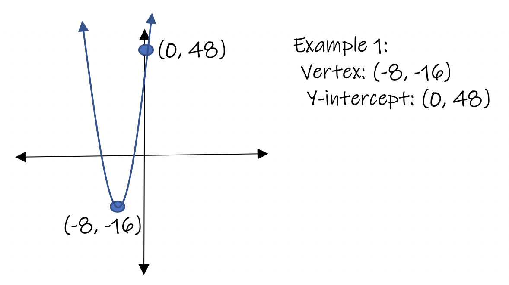
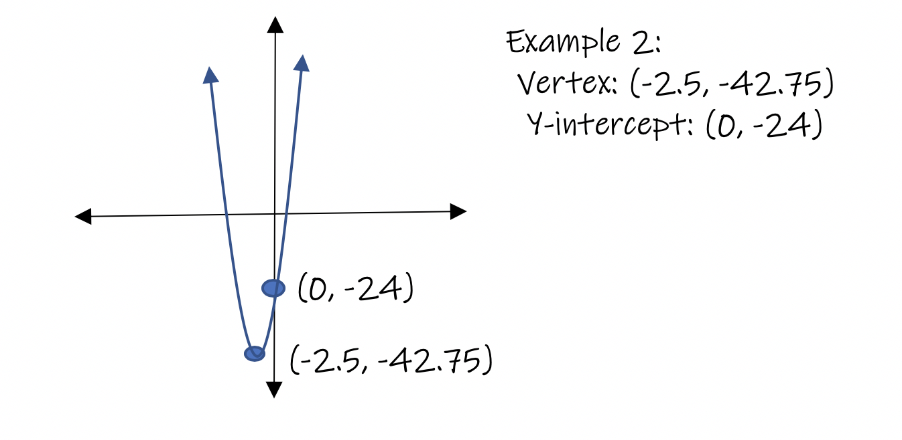
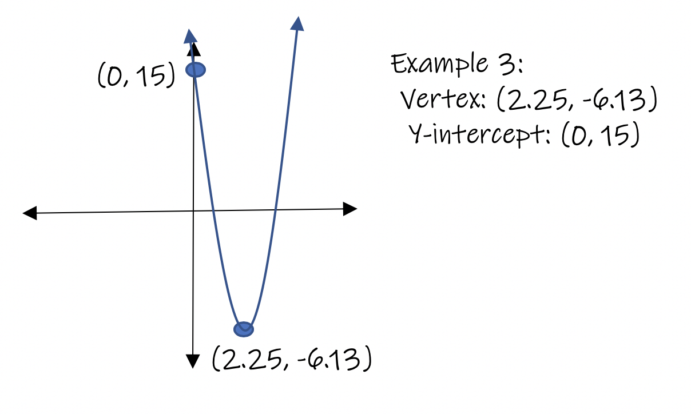

As you prepare to learn how to graph quadratic equations, you will need to memorize the properties that all Parabolas share.
Every quadratic equation has four main characteristics that you will need to calculate in order to make the graph of the equation. Quadratic Equations require much more information to be graphed than a Linear Equation, in which you only needed two points. For a Parabola, we will need more points to make its graph. In fact, we can calculate up to 4 main points in order to be able to graph a parabola. Eventually we will look at more points to plot for our graph to make it more exact. Here, we are only introducing the basics of a Parabola, the graph of a quadratic equation.
There are four main characteristics of any Parabola once graphed. You must memorize how to calculate each of the 4 characteristics.
1. The x-coordinate of the vertex
2. The value of the vertex as an ordered pair (x, y)
3. The y-intercept
4. Whether the graph opens up or down
Let's look at each property in more detail.
1. The x-coordinate of the vertex of the parabola can be calculated using the formula x = -b / 2a. The values of a, b, and c can be gotten from the original equation.
a, b, and c are the coefficients of the variables when the equation is written in Standard Form
ax2 + bx + c.
2. The value of the vertex written as an ordered pair (x, y):
Once you complete step one and get the x-coordinate of the vertex, substitute the value into the quadratic equation and calculate the answer, the value of the y-coordinate. Then write your answers as an ordered pair. This will be the vertex of the parabola. This is a very important number. Please memorize these two steps it will save your life in the long term!
3. The y-intercept can be found by substituting x = 0 into the equation and solving for y. Write the two values as an ordered pair (0, y). When you plot this point you will have the y-intercept of the parabola.
4. The graph of a parabola opens upwards if the value of variable a is greater than zero. The vertex is considered a minimum value; the lowest point of the graph.
The graph opens downwards if the value of a is less than zero. The vertex is considered a maximum value because it is the highest point of the graph.
Example 1: calculate the four main properties of the parabola defined by the equation: y = x2 + 16x + 48.
Step 1: Calculate the x-coordiante of the vertex by calculating x = -b / 2a.
x = -16/2
x = -8 Answer*
Step 2: Locate the vertex of the Parabola. Use the value of x and substitute it into the equation
y = x2 + 16x + 48.
y= (-8)2 + 16(-8) + 48.
y = 64 + -128 + 48
y = -16 Answer*
The vertex is at x = -8, y = -16 or as an ordered pair: (-8, -16).
Step 3: The y-intercept can be calculated by replacing the x-coordinates in the equation with zero. Then solve for y.
y = x2 +16x + 48
y = 02 + 16(0) + 48
y = 48
x = 0
(0, 48) Answer *
Step 4: Since the value of a is +1, the vertex opens upwards.
Example 2: calculate the four main properties of the parabola defined by the equation: y = x2 + 5x - 24.
Step 1: Calculate the x-coordinate of the vertex by calculating x = -b / 2a.
x = -5/2(1)
x = -5/2
x = -2.5 Answer*
Step 2: Locate the vertex of the Parabola. Use the value of x and substitute it into the equation
y = x2 + 5x - 24.
y= (-2.5)2 + 5(-2.5) - 24
y = -42.75 Answer*
The vertex is at x = -2.5, y = -42.75 or as an ordered pair: (-2.5, -42.75).
Step 3: The y-intercept can be calculated by replacing the x-coordinates in the equation with zero. Then solve for y.
y = x2 + 5x - 24
y = 02 + 5(0) - 24
y = -24
x = 0
(0, -24) Answer *
Step 4: Since the value of a is +1, the vertex opens upwards.
Example 3: calculate the four main properties of the parabola defined by the equation: y = 2x2 -13x + 15.
Step 1: Calculate the x-coordiante of the vertex by calculating x = -b / 2a.
x = -(-13)/2(2)
x = 13/4
x = 3.25 Answer*
Step 2: Locate the vertex of the Parabola. Use the value of x and substitute it into the equation
y = 2x2 - 13x + 15.
y= (-3.25)2 - 13(-3.25) + 15
y = -6.13 Answer*
The vertex is at x = -3.25, y = -6.13 or as an ordered pair: (-3.25, -6.13).
Step 3: The y-intercept can be calculated by replacing the x-coordinates in the equation with zero. Then solve for y.
y = 2x2 - 13x + 15
y = 02 - 13(0) + 15
y = 15
x = 0
(0, 15) Answer *
Step 4: Since the value of a is +2, the vertex opens upwards.
Below you will see each problem as it looks as a graph. Parabolas always maintain a U-shaped graph with a line of symmetry vertical and passing through the vertex of the graph.



Let's try one on your own.
Calculate the 4 main properties of the parabola:
y = x2 + 6x + 8
When finished, click Reveal the Answer to see the solution.
Let's try another one on your own.
Calculate the 4 main properties of the parabola:
y = x2 + 10x + 21
When finished, click Reveal the Answer to see the solution.
Let's try another one on your own.
Calculate the 4 main properties of the parabola:
y = -2x2 - 2x + 12
When finished, click Reveal the Answer to see the solution.